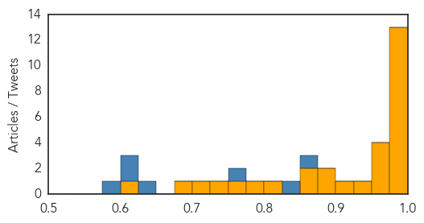
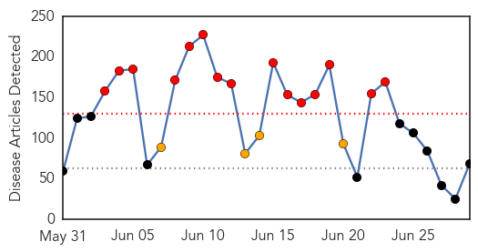
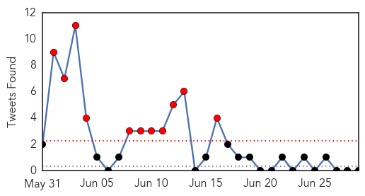
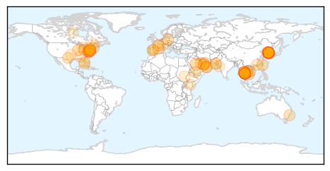

Ebola
30-Day Web Trend
0 alerts, 0 warnings

30-Day Twitter Trend
0 alerts, 0 warnings

Article Locations

Article Confidences
Top Articles:
- 1.000
- Ebola-hit Sierra Leone quarantines 31 health workers
- 0.999
- Is Sierra Leone sleep walking into another round of Ebola epidemic?
- 0.999
- Daytime Ebola curfew for Sierra Leone
- 0.999
- As Ebola Dies Down, Officials Turn to Preventing the Next Pandemic
- 0.999
- Ebola Back in Liberia: 1 Month, 20 Days After 'Free' Declaration
- 0.999
- Ebola: Sierra Leone suffers setback, two new cases recorded
- 0.999
- Ebola cases not slowing in Guinea, Sierra Leone
- 0.995
- Sierra Leone imposes three-week curfew
- 0.994
- Sierra Leone announces new curfew to halt Ebola
- 0.992
- Helping Guinean communities fight Ebola
- 0.992
- Sierra Leone announces new curfew to halt Ebola
- 0.990
- Liberia’s chief medical officer discusses Ebola with UBC
- 0.978
- New study verifies accuracy of rapid Ebola test
- 0.975
- Utilizing Local Governance in Post Ebola Recovery Drive
- 0.969
- Disease surveillance is crucial
- 0.967
- Researchers Have Successfully Treated MERS in Mice
- 0.962
- ICAO Commends Nigeria for Eliminating Ebola, Articles
- 0.934
- Researchers explore effectiveness of statins against Ebola
- 0.923
- New Study Verifies Accuracy of Rapid Ebola Test
- 0.897
- Page not found
- 0.888
- Are statins the secret weapon against Ebola?
- 0.867
- A survivor’s Ebola revenge mission « Awoko Newspaper
- 0.853
- Sierra Leonean intellectual engages National Coalition of Independent Scholars Conference
- 0.801
- Sierra Leone urged to get tough on tax to repair battered health system
- 0.793
- United Nations Ebola Outbreak Update June 2015 – 35th Edition - Sierra Leone
- 0.753
- COMMITTEE ON TRANSPARENCY VISITS AIRPORTS AUTHORITY
- 0.746
- Televised Ebola news coverage influences social media panic
- 0.707
- How to Win the War Against Infection, Inflammation, Disease and Immunity
- 0.685
- After Ebola, understanding health care needs among rural Liberians
- 0.613
- After Ebola, understanding health care needs among rural Liberians
Top Tweets:
- 0.988
- After Ebola, understanding health care needs among rural Liberians - Medical Xpress http://t.co/wxMcl4FWnH ebola EVD
- 0.954
- Running A Business In West Africa After Ebola: A Lesson In Entrepreneurial Agility - Forbes http://t.co/ybsUbGkm69 ebola EVD
- 0.938
- Assembly of the Ebola Virus Nucleoprotein from a Chaperoned VP35 Complex http://t.co/wWQaLn1sSJ
- 0.925
- ICAO Commends Nigeria for Eliminating Ebola - THISDAY Live http://t.co/0Wb8Ccs8Qa ebola EVD
- 0.887
- New study verifies accuracy of rapid Ebola test - Medical Xpress http://t.co/9fvTwppUtV ebola EVD
- 0.879
- Rapid test for Ebola developed by Cardiff firm BBI - WalesOnline http://t.co/BWkD89e4oI ebola EVD
- 0.844
- After Ebola, understanding health care needs among rural Liberians - Medical Xpress http://t.co/MaGjUeWTJ1
- 0.843
- How can governments better respond to new Ebola cases in West Africa?
- 0.785
- Are statins the secret weapon against Ebola? - Futurity: Research News http://t.co/LfOwidW81x ebola EVD
- 0.726
- Neglected Tropical Diseases in the Ebola-Affected Countries of West Africa http://t.co/KJ1UsAxZNg
- 0.716
- As Ebola Dies Down, Officials Turn to Preventing the Next Pandemic - http://t.co/KC4xa7jxzH http://t.co/Z4eEVnsxbX ebola EVD
- 0.642
- RT: More NCIS than Grey's Anatomy - @dyhmowit for on the last mile of the Ebola fight in W.Africa . http://t.co…
- 0.603
- Minimizing the Risk of Disease Transmission in Emergency Settings HospitalWastewaters ebola http://t.co/g9pYbD3qOQ
- 0.598
- Running A Business In West Africa After Ebola: A Lesson In Entrepreneurial Agility - Forbes http://t.co/YvIWAPGZsR
- 0.565
- The Ebola fight is serious. SierraLeone to jail Ebola law violators in order to curb outbreak http://t.co/tjfD2M9PqA http://t.co/V2Iy061SX3
- 0.526
- How to Prevent the Next Pandemic ebola http://t.co/2q2tWpx0t5
- 0.524
- The week in numbers humanitarian ebola http://t.co/LWYtl8u1lU
Unknown
30-Day Web Trend
15 alerts, 4 warnings

30-Day Twitter Trend
11 alerts, 0 warnings

Article Locations
Article Confidences

Top Articles:
- 0.999
- Thailand's first MERS case declared free of deadly virus, news, Health News, AsiaOne YourHealth
- 0.999
- Thailand's first Mers case declared free of deadly virus, Government & Economy
- 0.999
- (2nd LD) S. Korea sees no additional cases of MERS for 2nd consecutive day
- 0.998
- Thailand’s first MERS case declared free of virus
- 0.998
- Thailand’s first MERS case declared free of deadly virus
- 0.998
- Thailand’s first MERS case declared free of deadly virus
- 0.998
- Thailand's first MERS case declared free of deadly virus
- 0.996
- Omani declared free of MERS virus in Thailand
- 0.995
- South Korea cautiously reports no new Mers cases or deaths, Government & Economy
- 0.991
- South Korea reports 32nd MERS death
- 0.991
- No more MERS cases for two days
- 0.990
- South Korea hospitals to monitor emergency room visitors in battle on MERS, news, Health News, AsiaOne YourHealth
- 0.989
- Thailand's only case now declared free of deadly virus
- 0.987
- Researchers discover why last year’s flu vaccine was so weak
- 0.987
- No MERS cases reported for two consecutive days
- 0.977
- KBS World Radio
- 0.974
- Shigella sonnei antibiotic resistance appears in South Korea
- 0.970
- MERS outbreak appears to be finally dying out-INSIDE Korea JoongAng Daily
- 0.958
- UAE expat woman and child infected with MERS
- 0.943
- Thailand's first MERS case declared free of deadly virus
- 0.941
- UAE expat woman and child infected with MERS
- 0.940
- Thailand's lone MERSÂ patient cleared of virus
- 0.926
- DH closely monitors two additional MERS cases in UAE
- 0.917
- Chicago Tribune
- 0.917
- Chicago Tribune
- 0.917
- Chicago Tribune
- 0.917
- Chicago Tribune
- 0.917
- Chicago Tribune
- 0.917
- Chicago Tribune
- 0.917
- Chicago Tribune
- 0.917
- Chicago Tribune
- 0.917
- Chicago Tribune
- 0.917
- Chicago Tribune
- 0.917
- Chicago Tribune
- 0.915
- 20 people in contact with patient get all-clear
- 0.910
- Pattaya News, Communities, Opinions and much more...
- 0.910
- The world windows to Thailand
- 0.910
- The world windows to Thailand
- 0.905
- Diphtheria boy loses battle
- 0.874
- Mutation to Blame for Low Efficacy of 2014-15 Flu Vaccine Pinpointed
- 0.866
- Car bomb in Yemeni capital hits mourners, 28 wounded -medics, residents
- 0.861
- Medical tourism ‘helps Thais cope with MERS’
- 0.851
- 1,000 runners get norovirus after French mud run
- 0.844
- Thailand's first MERS case declared free of deadly virus
- 0.835
- ASU implements precaution for incoming Korean students
- 0.824
- Lyme disease: Tick researcher finds bacteria with similar symptoms to controversial disease
- 0.823
- Heatwave in Karachi claims 25 more lives
- 0.742
- More people in Florida sickened by toxin in tropical reef fish than previously reported
- 0.736
- S Korea retailers try to woo shoppers back as MERS shows signs of easing
- 0.714
- The Chosun Ilbo (English Edition): Daily News from Korea
Showing top 50 articles...
Top Tweets:
- 0.526
- Si algún cuarto o salón de tu universidad está bien iluminado por el sol, no es necesario que se dejen las luces prendidas. @UPRestudiantes